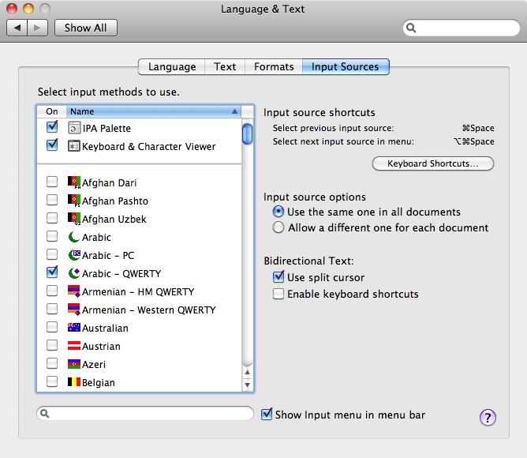

User's Guide
for
IPA Palette v2.0
/ʔa͜ɪ.pʰi'ɛ͜ɪ.pʰə'lɛʔ/
Brian S. "Moses" Hall
In a Nutshell
IPA Palette is a Unicode input method for the Mac. It allows users of OS X 10.5 and later to insert International Phonetic Alphabet symbols in any Unicode-enabled text field or editor.
How to Install
Use the supplied installer and you should have no trouble. The installer tries to notify Mac OS that a new Input Method has been added or modified, and it also tries to terminate any currently-running instances of the input method. If you are unable to activate/use the Palette immediately, restart the machine. While inconvenient, it is the best way to get a reluctant system to "see" the new software.
How to Enable
| Go to System Preferences → Language & Text → Input Sources. (On Leopard it is System Preferences → International → Input Menu.) IPA Palette should show up near the top of the list of input methods, allong with the built-in Character Palette. Put a check mark in the box to enable it, and also make sure the check box at the bottom of the window ("Show Input menu in menu bar") is checked also. This enables the Input Menu. |

|
How To Use
Select the Input Menu item "Show IPA Palette". The IPA Palette main window should then open as pictured below.
To enter text, you click on the desired IPA symbol. The preview pane on the right side of the palette shows a magnified image of the character the mouse is over. You can select the preview font you want to see using the popup menu button above it.
Note: the font selection on the palette has no direct influence on the font selection in your document. You can insert a character in the preview font by control-clicking it, but that only applies to the character that is inserted, not to the font selected in the System font panel.
Alternation: Superscripts and Above/Below
Standard IPA superscripts (such as ʰ and ʷ), and superscript versions of other IPA symbols (like ᵊ and ᶿ, when provided by a good font) do not have separate buttons. Instead, you hold down the shift or option key (or both) with the button for the full-sized version of the symbol. Similarly, certain diacritics can alternate between "above" and "below" versions, for example the under-ring that indicates voicelessness (n̥). You can also put the ring above, in the case of a carrier with a descender (ŋ̊).
To preview one of these alternate versions, hold down either the shift or option key when the cursor is over a symbol. If Unicode supports an alternate form, the preview will change. To insert the alternate, hold the shift or option key as you click on the symbol.
Example: to insert aspiration /ʰ/, find the voiceless glottal fricative /h/ in the Consonants tab, hold down the shift and/or option keys, and click the symbol.
Note: currently this does not work with the list of results in the search tab, but you can search for the string "aspirated" to find it.
|
Precomposed Retroflex, Palatal, and Velar Panes
|
Doulos and Charis do not support the combining tilde overlay or the combining palatal and retroflex hooks. Instead, the recommendation is to use one of the many cool-looking precomposed characters. To this end, IPA Palette includes three new image maps which can be shown/hidden by clicking on the small triangles in the diactitic section of the "Other" pane.
This is intended for those who use custom keyboard layouts, for example
IPA Unicode 5.1 Macintosh Keyboard. If enabled in the
Settings pane ("Show Keyboard Shortcuts" checkbox), IPA Palette will scan the current keyboard layout you are using and try to display the keyboard shortcut (if any) for the symbol you are holding the mouse over. In this way you can use the software as a sort of "Reverse Keyboard Viewer:" instead of seeing the symbol generated by the given keys, you see the keys needed to generate a symbol of interest.
User-Defined Symbols
If IPA Palette tried to show all of the symbols used in theoretical and applied linguistics, the window would have twenty tabs and fill the entire screen! It's a painful choice, but only current IPA/ExtIPA symbols (and their superscripts if available) will be officially supported. However, if you need some additional symbols that are not in IPA but are still supported by Unicode, you can add them to your preferences. Or maybe you just use a few IPA symbols and you want them all on the same tab.
The
Settings pane has a menu called
Custom Symbols. Using that you can use the
Edit… item; a sheet will be displayed in which you can edit your symbols. You can add (with the plus button) and delete (with the delete key). You can paste in a symbol, or you can use Apple's Character Palette to enter one. Under the
Description column you can describe the symbol if you wish. If you do, the description will be displayed at the bottom of the palette when you mouse over the symbol, and you can search for it in the
Search tab.
The
Custom tab pane is updated every time you edit your list. (If you remove all of them, or don't have any, the
Custom pane will not be displayed in the Palette.) Custom symbols and their descriptions are saved in your preferences, so you only have to define them once.
Note: if a glyph is a diacritic, IPA Palette will (should -- there may be some nonspacing characters it does not know about -- let me know if there is one it misses) add the normal dotted circle (U+25CC) as a placeholder in the table and the image map. You don't need to (and should not) add it manually.
|
Custom symbols also has Export… and Import… items. This functionality was requested by a user who was teaching a class and wished his students to have a certain set of symbols he could prepare for them and just have them load them in without a lot of tedious editing. The file format is just a old plain XML Property List (.plist, like a preferences file). |
Font Support
Although OS X has always had decent IPA support, I am assuming that most IPA Palette users will want something better than decent. I recommend Doulos SIL or Charis SIL, both high-quality free fonts from
SIL International. They are the de facto standard IPA fonts, and I have designed IPA Palette with them in mind. The SIL font designers have made Doulos/Charis "smart" using OpenType and AAT (Apple Advanced Typography) properties. Take as an example the IPA tone symbols
U+02E5 through
U+02E9. While fonts in the Hiragino family can render them, Doulos can form elegant ligatures:
Note: please use Doulos or Charis SIL version 4.110; some earlier versions were buggy and would cause weird warning messages under Snow Leopard. I think the bugs were resolved with 4.110 or one of its immediate predecessors.
Font "Synchronization"
To insert a symbol in the current open document in the font that you have selected for the font preview, hold down the Control key when you click on it.
Note: anything you type subsequently will be in the font that was selected before. Only the inserted symbol will be in the preview font. Note: not all target programs support this. Microsoft Word 2008, for example, suffers from this defect. (Actually its users suffer, but hasn't that always been the case?)
User-Defined Fonts
IPA Palette tries to show only IPA fonts in its popup menu. To be specific, it searches every installed font for those which contain /ɮ/,
LATIN SMALL LETTER LEZH. If you want the menu to show additional fonts, you can do so, but you must modify your preferences using the Terminal or with Property List Editor (part of Apple's XCode developer tool suite). (
Note: most users will not need or wish to do this.)
defaults write com.blugs.inputmethod.IPAPalette UserFonts '("Arial Narrow","Papyrus")'
The font names are a combination of "Family" (like "Hiragino Maru Gothic"), and "Typeface" (like "Regular", "W4", or "Bold"). You can omit "Regular", as in the example above for the Papyrus typeface. You can find these names using Font Book or the standard font panel.
How to Report Bugs or Feature Requests
moses@blugs.com (that's me)
If you have a crash, try to send a CrashReporter log with your report. Also, try to turn on "Debugging" via the "About" pane of the IPA Palette window itself; a higher debug level sends more status message to the System logger. You can monitor this using
/Applications/Utilities/Console while IPA Palette is running. It's not perfect, but it may give us some clues about what has happened.
Please try to be as complete as possible in your description. "IPA Palette doesn't work on my computer" is a waste of my time and yours.
FAQ and Potential FAQ Section
Q: Can I use the palette in Microsoft Office?
A: Maybe.
- Old versions (Office X and earler) do not speak Unicode at all. Forget it.
- In Word 2004, diacritics are not positioned correctly. Microsoft engineer: "Die a critic? Huh??"
- Word 2008 and 2011 actually seem to almost work sometimes! Wow guys, it only took you 8 years?
Q: Does IPA Palette work with Application XYZ?
A: Maybe.
- In general, if the software works with Character Palette, it will almost certainly work with IPA Palette.
- It depends on how well application XYZ supports Unicode. Carbon (C-language programs that may or may not work with Mac OS 9) software, especially software written with legacy QuickDraw text APIs, is particularly vulnerable to this kind of incompatibility, as the old Mac Toolbox was written way back in the Late Mesozoic period before Unicode.
- Cocoa (Objective-C programs that require OS X) software is automatically Unicode-savvy, so no worries there. I would be shocked to find a Cocoa application that causes problems for IPA Palette.
- OpenOffice, X11 software, Java programs, and any other miscellaneous categories may perform arbitrarily well or poorly, depending on the implementation language and the phase of the moon.
Q: My Linguistics class is over. How do I uninstall the Palette?
A: Manually.
- The software is in /Library/Input Methods or ~/Library/Input Methods, depending on how you installed it. In either case, just drag the software to the Trash or the desktop. The next time you log in, the software will be completely inactivated, and then you can empty the Trash.
Q: Is IPA Palette available on the Mac App Store?
A: No, and it probably never will be.
- Until Apple cleans up its act and makes the App Store more compatible with open source software, this is not going to happen.
- I'm not sure I terribly keen on the idea of paying Apple for the privilege of giving away my free software.
- I think readers know by now how I feel about the Mac App Store.
Thanks to...
- Matt Gemmell for permission to use his
MAAttachedWindow code under GPL 2+ license
- Evan Gross from Rainmaker Research for help with fun
NSApplication undocumented calls for the search pane
- Hans-Jörg Bibiko for the German localization (which has been modified in the years since; any errors are certain to be mine)
- David Swain for help in debugging the
cmap type 2 crasher
- Joanne Scheibman for help debugging under Rosetta/Word
- Maxim Makatchev for corrections to the Russian localization
- Many, many other kind folks who have offered suggestions and advice